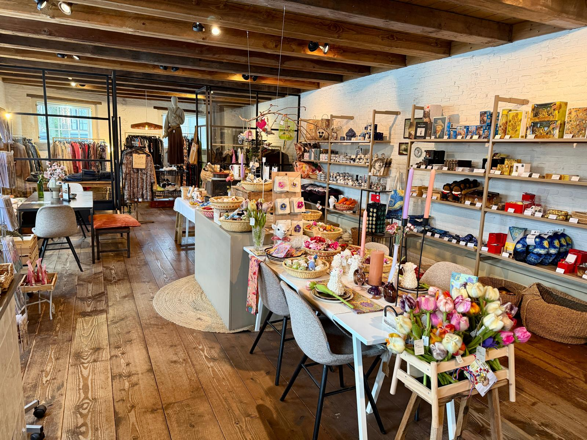
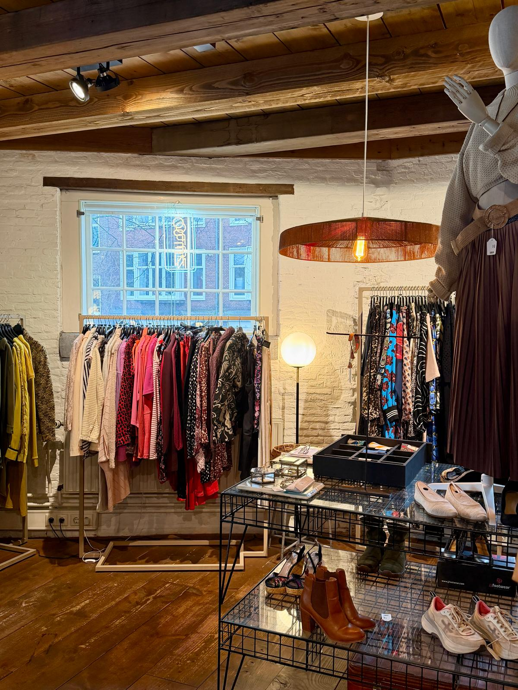

Ons verhaalOur story
Wij zien jouWe see you
Er is altijd hoop op een beter leven. Dat geloven wij. En dat is wat we elke dag proberen waar te maken — voor de makers van onze producten, voor de mensen die in onze winkel werken, en voor jou.
There is always hope for a better life. We believe that. And that's what we try to make real every day — for the makers of our products, for the people who work in our shop, and for you.

Wie we zijnWho we are
Meer dan een winkelMore than a shop
Crafted Stories is een winkel in de Jordaan waar je handgemaakte cadeaus, eerlijke lifestyle producten en tweedehands kleding vindt. Maar het bijzondere zit niet in wat we verkopen — het zit in waarom we het doen.
Crafted Stories is a shop in the Jordaan where you'll find handcrafted gifts, fair lifestyle products and secondhand clothing. But what makes us special isn't what we sell — it's why we do it.
Wij geloven dat er voor iedereen een plek is op deze aarde. Of je nu oud bent of jong, man of vrouw. Wij geloven dat er altijd hoop is op een volgende stap naar een beter leven. Die overtuiging zit in alles wat we doen: in de producten die we verkopen, in de mensen die bij ons werken, en in de sfeer die je voelt als je binnenkomt.
We believe there is a place for everyone on this earth. Whether you're old or young, man or woman. We believe there is always hope for the next step towards a better life. That conviction is woven into everything we do: the products we sell, the people who work with us, and the atmosphere you feel when you walk in.
Zelfs door een koffie te drinken bij ons draag je bij aan een stukje hoop in iemands leven.
Even by having a coffee with us, you're contributing to hope in someone's life.

Onze makersOur makers
Elk product draagt een verhaal van hoop Every product carries a story of hope

Vilten met gevoel
Felt with feeling
In India werkt een groep blinde ambachtslieden in een van de ateliers van Sjaal met Verhaal. Mensen die normaal gesproken weinig kans hebben op werk en inkomen. Maar zij werken in een veilig atelier waar ze prachtige producten van vilt maken. Ze krijgen een eerlijk loon en een waardige werkplek.
In India, a group of blind artisans work in one of the ateliers of Sjaal met Verhaal. People who normally have little chance of employment. But they work in a safe atelier where they create beautiful felt products. They earn a fair wage in a dignified workplace.
Wij kopen deze producten in en verkopen ze in onze winkel. Dus op het moment dat jij een product koopt bij ons, werkt dat direct door tot aan deze groep mensen in India.
We purchase these products and sell them in our shop. So when you buy a product from us, it directly benefits these people in India.

Sieraden van moed
Jewellery of courage
We verkopen sieraden van hars die zijn gemaakt door vrouwen die uit de sekswerkindustrie zijn gestapt in Brazilië. Deze vrouwen kozen voor een ander leven. Nu werken ze in een atelier waar ze sieraden maken, een opleiding krijgen en een eerlijk loon verdienen.
We sell resin jewellery made by women who left the sex trade in Brazil. These women chose a different life. They now work in an atelier where they create jewellery, receive training and earn a fair wage.
Ze hebben een veilige werkplek, een stukje opleiding en een eerlijk inkomen. Hun sieraden dragen een verhaal van moed en een nieuw begin.
They have a safe workplace, training and a fair income. Their jewellery carries a story of courage and new beginnings.

Een tweede leven
A second life
Naast handgemaakte producten verkopen we tweedehands kleding die we een tweede leven gunnen. De opbrengst van deze kleding gaat direct terug naar onze sociale projecten. Zo werken we samen met daklozen, verslaafden, sekswerkers en kinderen in armoede.
Besides handcrafted products, we sell secondhand clothing given a second life. The proceeds go directly back into our social projects, supporting people experiencing homelessness, addiction, sex work and children in poverty.
Heb je schone, up-to-date kleding die je niet meer draagt? Breng het gerust bij ons in!
Do you have clean, up-to-date clothing you no longer wear? Feel free to bring it in!
Onze werkplekOur workplace
Een opstapje naar de toekomst A stepping stone to the future
In onze winkel werken we met mensen uit kwetsbare doelgroepen. We bieden leerwerkplekken aan waar mannen en vrouwen alle vaardigheden leren die je nodig hebt in de retail, gastvrijheid en horeca — van barista zijn tot klanten helpen.
In our shop, we work with people from vulnerable backgrounds. We offer learning-working positions where men and women learn all the skills needed in retail, hospitality and food service — from being a barista to helping customers.
Het is een veilige werkplek — een opstapje naar een betaalde baan in de maatschappij. Doordat we werken met subsidies en vrijwilligers hebben we veel ruimte om deze mensen te begeleiden. En daarmee geven we een stukje hoop op een ander leven en een betere toekomst.
It's a safe workplace — a stepping stone to paid employment. Working with subsidies and volunteers gives us the space to guide these people. And with that, we offer hope for a different life and a brighter future.
Een vrouw kwam bij ons binnen zonder idee wie ze was of wat ze kon. Ze leefde geïsoleerd, werkte 's nachts, sliep overdag. In het halfjaar dat ze bij ons werkte, zagen we haar openbloeien. Ze ontdekte dat ze heel goed was met mensen, dat ze geweldig koffie kon maken, dat ze spontaan en gezellig was.
A woman came to us with no idea who she was or what she could do. She lived isolated, worked at night, slept during the day. In the six months she worked with us, we watched her blossom. She discovered she was great with people, that she could make wonderful coffee, that she was spontaneous and warm.
Van een onzekere vrouw die 's nachts leefde, groeide ze uit tot de spil van de winkel. Vaste klanten sloten haar in hun hart. Nu begint ze bij een zorginstelling waar ze betaald wordt en een opleiding krijgt — iets waar ze lang op hoopte maar nooit dacht dat ze het in zich had.
From an insecure woman living at night, she grew into the heart and soul of our shop. Regular customers took her to heart. She now starts at a care facility where she's paid and receives training — something she'd hoped for but never thought she had it in her.
Dat is hoop in de praktijk.
That's hope in action.
Onze waardenOur values
Waar wij voor staanWhat we stand for
Hoop
Hope
We geloven dat er altijd hoop is op een volgende stap. Of dat nou een beter leven is of een volgend beter stapje. Onze makers, onze medewerkers en onze klanten — allemaal maken ze deel uit van dat verhaal van hoop.
We believe there is always hope for the next step. Whether it's a better life or just a small step forward. Our makers, our team and our customers — they're all part of that story of hope.
Eerlijkheid
Honesty
We werken met eerlijke producten. De makers van onze producten krijgen een eerlijk loon, en onze eigen mensen ook. Eerlijke prijzen, eerlijke verhalen, eerlijke producten.
We work with fair products. The makers of our products receive a fair wage, and so do our own people. Fair prices, fair stories, fair products.
Er zijn
Being there
Onze visie is simpel: wij zien jou. We zien de mensen die het moeilijk hebben, die niet gezien worden. We geloven dat er voor iedereen een plek is — of je nou oud bent of jong, man of vrouw.
Our vision is simple: we see you. We see the people who are struggling, who are unseen. We believe there is a place for everyone — regardless of who you are.
Onderdeel vanPart of
Scharlaken Koord / Tot Heil des Volks
Crafted Stories is onderdeel van Tot Heil des Volks — een organisatie die al meer dan 170 jaar werkt met mensen in kwetsbare situaties in Amsterdam. Via Scharlaken Koord ondersteunen we daklozen, verslaafden, sekswerkers en kinderen in armoede.
Crafted Stories is part of Tot Heil des Volks — an organisation that has been working with people in vulnerable situations in Amsterdam for over 170 years. Through Scharlaken Koord, we support those experiencing homelessness, addiction, sex work and children in poverty.
"We craft stories. Let them craft yours."